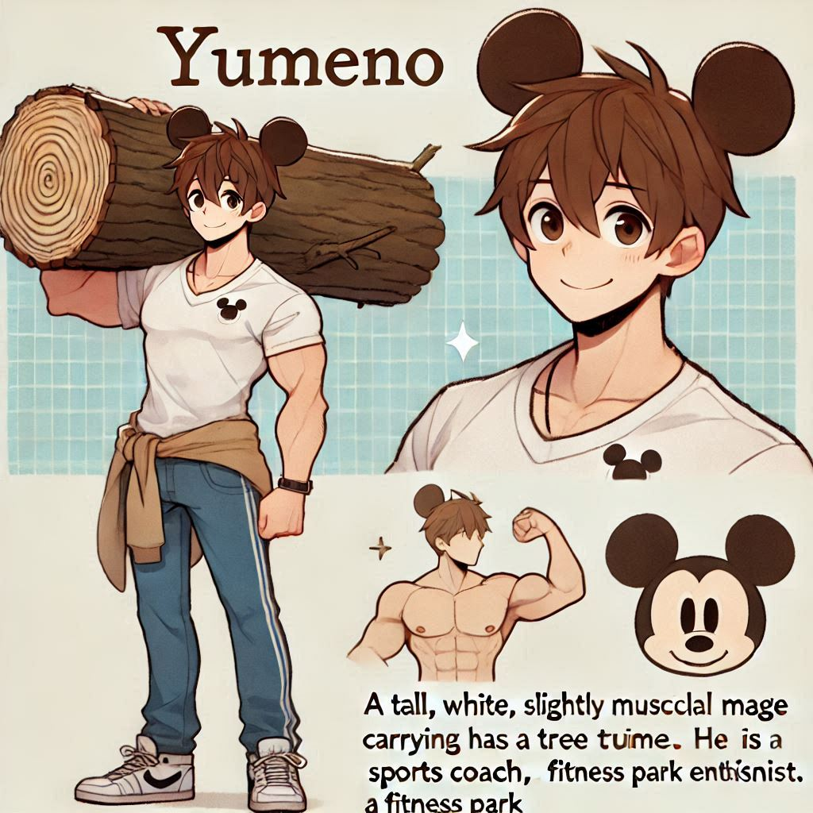

Yumeno
Yumeno est un grand mage blanc au charisme éclatant, connu pour son incroyable maîtrise des arts magiques et... des gourdins. Redoutable sur les champs de bataille et imbattable en duel, il manie son arme fétiche avec une précision et une puissance qui font trembler ses adversaires. Mais derrière cette façade de guerrier se cache un personnage haut en couleur.
Fan inconditionnel de la pop culture, Yumeno figure parmi les 5% des plus grands auditeurs d'une chanteuse adolescente à succès. Ses goûtscibles ne s'arrêtent pas là : il voue également une adoration sincère à Mickey Mouse, qu’il imite souvent avec un enthousiasme déconcertant, et il est passionné par l’univers de JoJo, adoptant parfois des poses dramatiques dignes de la série.
Parmi ses autres passions, les chokobonobos tiennent une place spéciale dans son cœur. Ces friandises absurdes, fusion entre des chocolats bonbons et des bonobos à l’accent allemand, sont devenues une obsession culinaire qu’il ne cache pas. Il en parle souvent avec un regard brillant, promettant qu’elles renferment une énergie magique qui nourrit ses exploits sportifs.
Car oui, en plus d’être un mage talentueux, Yumeno est également coach sportif. Grand amateur des salles de sport Fitness Park, il partage son savoir-faire en matière de remise en forme et de musculation avec une rigueur impressionnante. Avec ses séances d’entraînement, il transforme même les plus flemmards en véritables athlètes, le tout dans une ambiance joviale et décontractée.
Avec sa grande taille, ses cheveux courts bruns et son sourire contagieux, Yumeno est une figure aussi impressionnante qu’attachante. En tant que mage, coach, fanboy et fin gourmet, il incarne à merveille l'équilibre parfait entre puissance, passion et un humour irrésistible.
